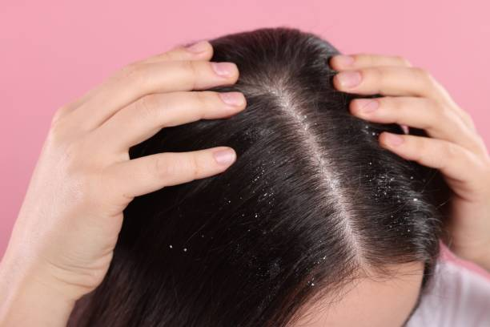

Discover expert tips on beauty, wellness, and self-care with the Play Salon Hair & Beauty Blog. Stay updated on the latest trends, innovative product treatments, and insider advice to elevate your grooming and skincare game.
5 Haircare Tips for Healthy and Shiny Hair ✨
Keeping your hair healthy is easier than you think!
Use a mild shampoo, trim your ends regularly, and never skip conditioner.
At Olivia Salon, we use nourishing products that strengthen your strands from root to tip.
Can Hair Spa Help Reduce Hair Fall?
A hair spa can be an effective way to reduce hair fall and restore the overall health of your hair, but it is not a permanent cure. Hair spa treatments focus on deep conditioning and scalp care — cleansing clogged pores, removing oil and dandruff buildup, and improving blood circulation to the roots through gentle massage. This increased circulation helps nourish the follicles, strengthens the hair shaft, and reduces breakage, leading to visibly softer, smoother, and healthier hair. Regular hair spa sessions also help balance scalp oil levels and relieve stress, which can further minimize hair shedding. However, it’s important to understand that while hair spas can treat hair fall caused by external factors like dryness, pollution, or stress, they cannot solve issues rooted in internal causes such as hormonal imbalances, nutritional deficiencies, or genetics. To effectively manage hair fall, pair your spa routine with a balanced diet rich in proteins, iron, and vitamins, maintain a healthy lifestyle, and consult a dermatologist if the problem persists. When combined with proper care, a hair spa can be a relaxing and beneficial step toward achieving stronger, more resilient hair.
3 Salon Treatments for Frizzy Hair
Frizzy hair can be frustrating, especially when humidity or dryness makes it hard to manage. Thankfully, salons offer professional treatments that can transform rough, unruly strands into smooth and shiny locks. One of the most popular options is the Keratin Treatment, which infuses natural keratin into the hair to eliminate frizz, add shine, and make styling effortless for months. Another great choice is the Hair Botox Treatment, a deep-conditioning therapy that repairs damaged hair, restores moisture, and leaves it soft and silky without making it completely straight. For those who want naturally sleek, manageable hair, the Smoothening Treatment works wonders by relaxing the hair texture while keeping its natural bounce. With the right aftercare — like sulfate-free shampoo and regular conditioning — these salon treatments can keep your hair frizz-free, healthy, and glowing for weeks.
5 Haircare Tips for Healthy and Shiny Hair ✨
Keeping your hair healthy is easier than you think!
Use a mild shampoo, trim your ends regularly, and never skip conditioner.
At Olivia Salon, we use nourishing products that strengthen your strands from root to tip.
Top 5 Sassy Hairstyles You Need to Try in 2021
So very SASSY. The 90’s flipped half-up half-down ponytail is a flawless selection for any occasion.
So how do you kick off this flattering hairstyle? All you need to do is start by sectioning your hair diagonally on one side to create that sleek front swoop. Next, using a flat iron, straighten the hair while also flipping the ends of your hair. Put half of the hair up in a precise, clean ponytail on the crown of the head while leaving the front and the rest of the hair down. And voila! This sleek, sexy look requires minimal effort but is definitely worth great applauds.

How to Get Rid of Dandruff in Winter: Naturals Salon Experts Reveal the Best Treatments ✨
Keeping your hair healthy is easier than you think!
Use a mild shampoo, trim your ends regularly, and never skip conditioner.
At Olivia Salon, we use nourishing products that strengthen your strands from root to tip.


.jpg)